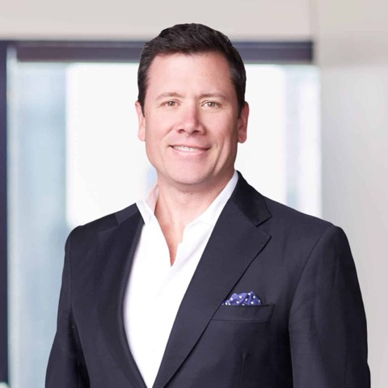

Company
Chief Executive Officer
George is the visionary and chief architect behind SpiderRock, crafting its philosophy and leading technological innovation. With a distinguished career in the trading industry, including executive roles with Peak6 in Chicago and Cantor Fitzgerald in New York, George's expertise drives SpiderRock's innovative solutions. He holds degrees in Applied Physics and Economics from the California Institute of Technology and graduated with honors.
Chief Revenue Officer
Annabelle spearheads business development and strategic planning at SpiderRock, leveraging her experience in exchanges, global banks, brokerage, and trading firms. Her leadership has propelled the firm's growth and evolution, delivering innovative solutions to clients worldwide. Annabelle holds degrees in Agronomy Engineering from Ecole Supérieure d'Agriculture, France, and a Master of Science in Ag-Business at Illinois State University.
Chief Operating Officer
As a co-founder, Craig leads many of SpiderRock's new business activities and the firm's operational and risk management efforts. With a business and technology consulting background, Craig played a pivotal role in building SpiderRock from its inception. Craig holds a bachelor's in engineering, an M.B.A. from the University of Chicago, and is a graduate of Harvard's Business Analytics program. Craig's experience is global, having held leadership roles at firms in Europe and Asia.

Director of Business Development
Pat brings extensive experience in derivatives trading to SpiderRock. He previously worked for ITG where he led global sales efforts and enhanced the firm's derivatives offering. Before ITG, Pat was a Managing Director and Partner at RedSky Financial, where he played a key role in commercializing and selling the broker-dealer to ITG in 2007. Early in his career, Pat worked on the trading floors and derivative exchanges in Chicago, Frankfurt, and London.
Chief of Enterprise Operations
Erik heads SpiderRock's Client Support, Quality Assurance, DevOps, Project Management, and Documentation. With a strong background in overseeing complex operations and driving customer service and organizational efficiency initiatives, Erik plays a crucial role in ensuring the proper functioning of the company's operations. Erik graduated from American University in Washington, DC, receiving a B.S.B.A. in Finance and International Marketing.
Chief Client Experience Officer
Aron leads SpiderRock's software development, IT, and networking teams, focusing on client experience initiatives. With over three decades of experience, he specializes in transforming client strategies into growth opportunities. Before SpiderRock, Aron spent 12 years in leadership positions with a SaaS provider, and implemented customer-centric programs that greatly enhanced product usability and customer retention rates.
Director of Business Development
Kevin joined SpiderRock in 2020 to build and lead the firm's off-screen trading business through the creation of a new ATS. He started his finance career at Deutsche Bank in the equity derivatives sales & trading group, and later was a founder of Woodlawn Advisors, a boutique derivatives firm. Following Woodlawn's acquisition, he led Robert W. Baird's new equity derivatives business and later joined Tullett Prebon. Kevin graduated from Columbia University with a BA in Economics, and from Cornell University's Johnson School with an MBA.
Head of Capital Markets
Dan leads the SpiderRock Capital Markets initiatives from our New York office. His experience in both fintech startups and traditional financial institutions positions him as a strategic leader in SpiderRock's growth and innovation. Before joining SpiderRock, Dan co-founded the fintech firm ETFLogic and led it to acquisition, and he managed the equity derivatives desks at GFI Group. Dan holds a B.A. in Economics from George Washington University.
Sales and Business Development,
Data & Analytics
Kasia leads the business development efforts for SpiderRock's Data & Analytics Business, which she helped to create in 2019. She joined SpiderRock in 2017 as a business analyst and has grown quickly into her leadership role in the Company's data business. Kasia holds undergraduate and graduate degrees in accounting, an M.B.A. from Northeastern Illinois University, and a PhD in Business Management from the University of the Cumberlands.
Behind any great technology is a team of experts. Let us help you consider whether SpiderRock is a good fit for bringing your team to the next chapter of its technology evolution.